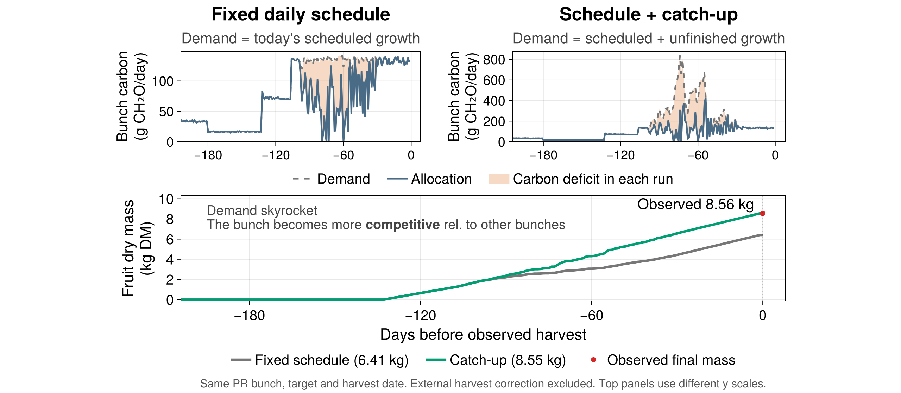
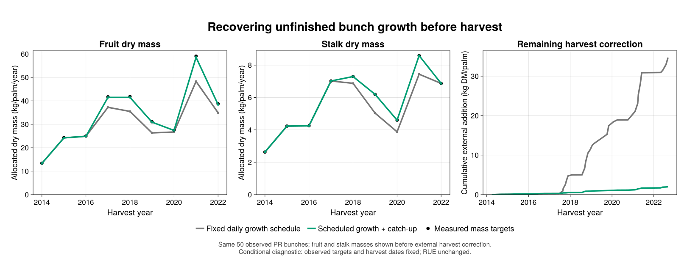
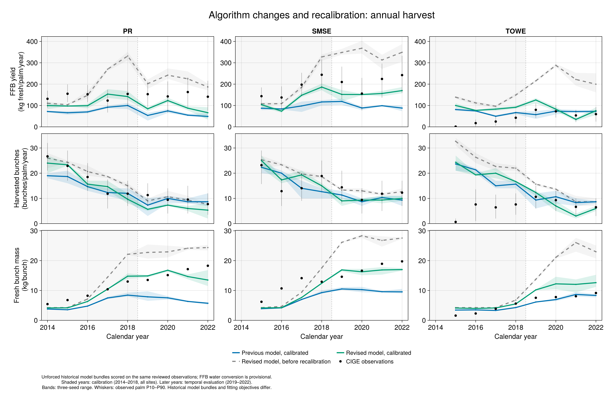
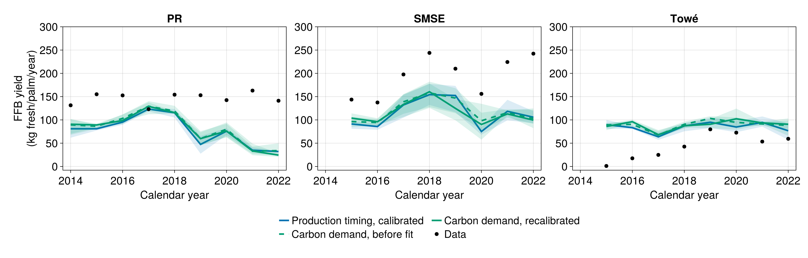

Let bunches recover unfinished growth
XPalm now carries unfinished bunch growth forward into the next day's carbon demand. Previously, a bunch requested only the growth scheduled for that day. If carbon allocation could not meet that request, the missing growth was lost even when carbon became available later, before harvest.
This change replaces the calculation in FemaleCarbonDemandModel. Existing parameter files use it automatically; no option or additional observation input is needed. Final potential masses, construction costs, carbon allocation and the harvest rule keep their existing roles. The change is to what a growing bunch asks for, not to the amount of carbon produced by the palm.
Why we changed the hypothesis
The CIGE investigation used measured organ histories to constrain the simulation. When available, final leaf areas, reproductive sex and survival, flowering and harvest dates, fruit counts, and fruit/stalk dry masses were imposed on the corresponding processes. Missing measurements left the model in control. A fixed numbering offset, anchored by one rank-17 observation per palm, linked measured and simulated phytomers; that is a reconstruction assumption, not proof of exact leaf identity.
These runs asked a specific question: given the observed organs and their final sizes, can the model supply the carbon needed to grow them? The final target was not inserted continuously as biomass. Actual growth still had to be paid for by carbon allocation. Any difference remaining at imposed harvest was recorded as an external biomass correction, separately from simulated growth.
For measured fruit mass and count, the final dry mass per fruit came from their ratio. The model retained its oil/non-oil partition and construction costs. Thus the observation set the destination, while carbon allocation determined how much of the route the simulated bunch actually completed.
We checked source supply, reserves, maintenance and construction costs before testing growth recovery. Even after increasing RUE, some bunches remained too small. Their daily demand had returned to the ordinary schedule: it no longer included growth missed during earlier carbon deficits. Increasing source supply could not recover growth that the bunch was no longer requesting.
One bunch shows the mechanism

The two upper panels follow the same bunch with the old and revised demand calculations. Dashed lines are carbon demand, blue lines are allocation, and orange areas show each run's carbon deficit. The upper panels have different y scales. The lower panel shows fruit dry mass before any external harvest correction.
| PR phytomer 146, harvested 5 November 2018 | Fixed schedule | Schedule + catch-up |
|---|---|---|
| Observed fruit dry mass (kg) | 8.559 | 8.559 |
| Fruit dry mass funded by allocation (kg) | 6.406 | 8.550 |
| Maximum whole-bunch demand (g CH₂O/day) | 141.680 | 837.057 |
With catch-up, unfinished growth raises the bunch's next request. Because the palm allocates carbon relative to organ demands, this bunch becomes a stronger competitor for the available carbon. It can recover some growth even while its larger request is only partly funded. A day shaded orange therefore does not mean that growth has stopped, nor that catch-up is impossible.
This is memory of unfinished growth, not a direct response to past drought. The model does not increase the final mass target, create carbon or delay harvest. A persistent shortage can still leave the bunch below its potential. The example was selected to illustrate recovery after a large deficit; it is not a random sample of bunches.
How demand and biomass are calculated
Non-oil fruit tissue, oil and stalk each have their own schedule and carbon cost. For one component, let S be the dry mass that has become due, B₀ its initial dry mass, P its current final potential, Bprev its previous actual mass, d the ordinary daily carbon request, and c the construction cost:
\[S_t=\max\{S_{t-1},\min[\max(0,P_t-B_0),S_{t-1}+d_t/c]\},\]
\[D_t=c\max\{0,\min(P_t,B_0+S_t)-B_{t-1}\}.\]
The first equation accrues each scheduled increment once. The second requests whatever is still missing from that accrued target. A temporary fall in potential does not erase the schedule, but the request never exceeds the current potential; it does not remove existing biomass if a potential falls. Harvest and abortion stop further demand. The terminal residual is retained before harvest clears standing biomass, so it is not recreated on subsequent days.
The biomass model is unchanged. If the bunch receives carbon allocation A, its components share that allocation according to their requests:
\[A_j=A\frac{D_j}{\sum_k D_k},\qquad \Delta B_j=\frac{A_j}{c_j}.\]
Demand and allocation are in g CH₂O-equivalent/day; component stocks are in g dry matter. Default construction costs are 1.44 g CH₂O/gDM for non-oil fruit tissue and stalk, and 3.2 for oil. Fruit dry mass includes oil; oil is not counted twice. Previous component stocks are supplied through PreviousTimeStep bindings to FemaleBiomass. Diagnostics distinguish newly scheduled growth from repeated requests: adding all daily requests would count the same unfinished growth more than once.
The underlying schedules still follow thermal progress in component growth windows, with later oil formation. They are piecewise linear in thermal progress, not fitted sigmoid growth curves. The revised demand has no separate maximum physiological recovery rate. This assumes that carbon supply and competition can limit recovery without an additional rate ceiling; intermediate bunch-growth measurements are needed to test that assumption.
Does it matter beyond one bunch?

These are the same 50 measured PR bunches, grouped by harvest year from 2014 to
- They are a measured subset, not the palm's exhaustive annual yield. The
standalone fruit panel shows the same fruit result with red observation markers.

| Before external harvest correction | Fixed schedule | Catch-up |
|---|---|---|
| Remaining fruit + stalk biomass addition (kg DM) | 34.691 | 1.989 |
| Fruit dry-mass RMSE (kg/bunch) | 1.048 | 0.065 |
| Stalk dry-mass RMSE (kg/bunch) | 0.156 | approximately 0.000 |
The remaining correction falls by 94.3%. RUE is 6.24 in both runs, and the counts, targets, dates and tissue costs are unchanged. Canopy feedbacks slightly change realized assimilate supply: 7,942.2 versus 7,914.0 kg CH₂O over 2014–2022. The change also caps daily-step overshoot of final potentials; unique scheduled demand differs by only 0.0032%, although a separate cap-only run was not made.
The result supports carrying unfinished growth forward under these conditions. It is not an independent prediction of the observed endpoints used as targets. Nor should it be credited with eliminating the investigation's initial roughly 100.6 kg discrepancy: several earlier model changes reduced that deficit first.
Recalibration and whole-model performance

The conference comparison shows the previous calibrated model, the revised model with the old parameters, and the revised model after recalibration. These are unforced whole-model simulations. Across 25 common site-years, pooled FFB modeling efficiency changes from −0.338 to −1.831 and then 0.377; normalized bias from −39.23% to 66.02% and then −14.19%; nRMSE from 60.78% to 88.40% and then 41.46%. Metrics use the three-seed mean and equal weight per observed site-year.
This illustrates why changing a process requires revisiting its calibration. It also combines several changes: earlier stalk demand, tissue costs, water-stress coupling and reproductive random streams. The historical fits used different objectives and parameter sets. The blue curve is a previously calibrated study model, not an untouched XPalm release, and its comparison cannot isolate catch-up. Later Towé FFB error and bunch-count error at all three sites remain worse after the historical recalibration.

A subsequent comparison used the same nine-response fitting objective, 14 parameters and bounds, 72-configuration budget, and 2014–2018 fitting years at all three sites. C is the calibrated baseline; D adds catch-up and earlier stalk scheduling at C's parameters; E recalibrates D. Final runs use paired seeds 1–3.
| Pooled FFB RMSE (kg fresh/palm/year) | C | D | E |
|---|---|---|---|
| Fitting years 2014–2018 | 59.68 | 57.05 | 56.93 |
| Later years 2019–2022 | 84.63 | 83.07 | 87.34 |
Thus the matched comparison improves the fit slightly, but does not establish better later-year yield prediction after recalibration. Those later years had already been inspected during development. FFB also relies on provisional fruit and stalk water fractions of 0.2358 and 0.667. Bands show the range of three seeds, not confidence intervals. These limits matter when interpreting the whole-model results; the organ diagnostic is the clearer evidence for changing demand memory.
Scope and reproduction
This package change replaces female demand with catch-up using native model potentials. It does not import the observation-forcing system, external biomass corrections, the fitted parameter values, earlier stalk scheduling or the other historical model changes. The preceding lifecycle changes are described in the reproductive lifecycle note.
The figures document archived application experiments, rather than fresh runs of this package revision. Their compact plotted data, checks and original drawing sources are in the evidence archive. The public assets/catchup/sources/render_public_figures.jl redraws the organ and annual-fruit panels from the bundled tables. Rerunning the experiments or calibrations requires the frozen inputs and environments in XPalm_calibration_new, whose numbered scripts 84–86, 96/99 and 101–104 record these successive comparisons.